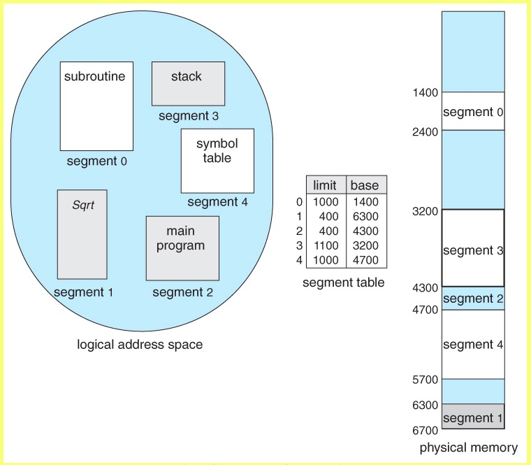
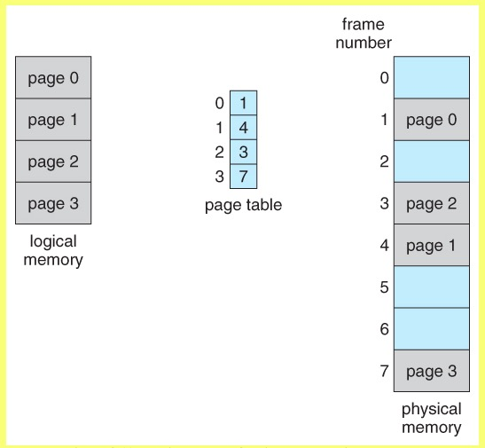
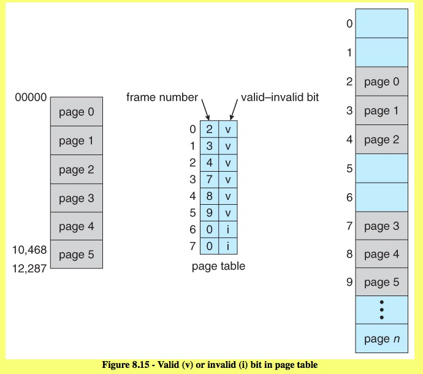
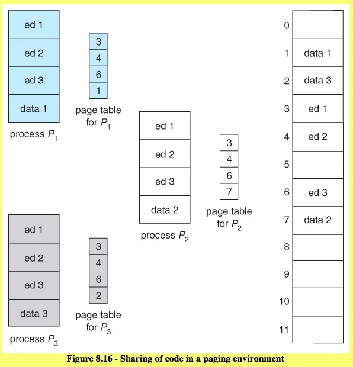
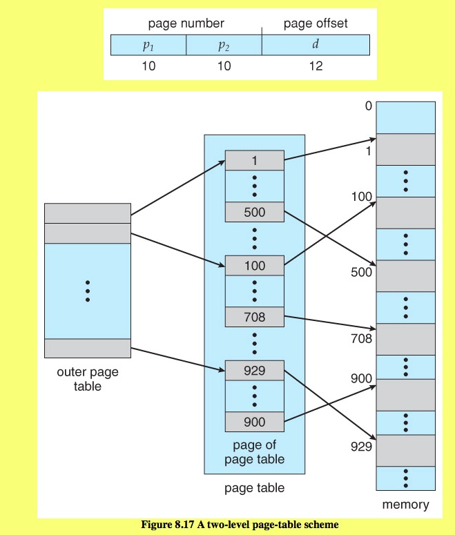

CS 5129 Operating System
Rui Dai
Chap 8. Main Memory
The difference between the compile time address binding and execution time (run time) address binding.
The difference between load-time and run-time binding is that in run-time every time there is a memory lookup it goes through a "relocation register" which is like the base register and then you add an offset.
In load-time binding it does the same thing but subsequent lookups don't require evaluation of this register. The addresses are set when it is first pulled into memory. Hence if the base address changes you need to re-load the whole process to fix up all the relocatable addresses.
In the case of run-time, you can move the process around in physical memory and not need to worry about re-loading it to fix the mapping up because every time there is an access to memory it maps it then.
Load-time binding results in matching logical/physical addresses but run-time results in differing logical/physical addresses.
Does the swapped out process need to swap back in to same physical addresses?
compile-time or load-time address binding, swapped back into the same memory location.
execution time binding, swapped back into any available location.
8.3 Contiguous Memory Allocation
- Memory Protection
protection against user programs accessing areas that they should not
- Memory Allocation
strategies for finding the "best" allocation of memory to processes, First fit, Best fit, Worst fit
- Fragmentation
external fragmentation & Internal fragmentation
To deal with fragmentation:
- compaction
If the programs in memory are relocatable, ( using execution-time address binding ), then the external fragmentation problem can be reduced via compaction, i.e. moving all processes down to one end of physical memory. This only involves updating the relocation register for each process, as all internal work is done using logical addresses.
- Segmentation
Another solution is allow processes to use non-contiguous blocks of physical memory, with a separate relocation register for each block.
8.4 Memory Segmentation
- Basic Method (Programmer's view of a program.)
We think of memory in multiple segments, each dedicated to a particular use, such as code, data, the stack, the heap, etc. Memory segmentation supports this view by providing
(segment number ( mapped to a segment base address ) , offset from the beginning of that segment.)

Segmentation permits the physical address space of a process to be non-contiguous. Paging is another memory-management scheme that offer these advantage. And more, avoid external fragmentation. Now, the logical address space is totally separated from the physical space. So, a process can have a address space even larger than the physical memory.
8.5 Paging
Paging: eliminates most of the problems of the other methods discussed previously, and is the predominant memory management technique used today. Paging is a memory management scheme that allows processes physical memory to be discontinuous, and which eliminates problems with fragmentation by allocating memory in equal sized blocks known as pages.
8.5.1 Basic Method (pages --- frames)
divide physical memory into a number of equal sized blocks called frames, divide a programs logical memory space into blocks of the same size called pages.

Page lookups must be done for every memory reference, and whenever a process gets swapped in or out of the CPU, its page table must be swapped in and out too, along with the instruction registers, etc.
8.5.2 Hardware Support (TLB)
- One option is to use a set of registers for the page table.
- An alternate option is to store the page table in main memory, and to use a single register ( PTBR, the page-table base register) to record where in memory the page table is located.
- The problem with this approach is the time required to access a user memory location: Two memory accesses needed to access a byte (1. page table entry; 2. byte). Memory access is slowed by a factor of 2.
- Solution: use a special high speed memory device, (TLBs)
(TLBs) Translation look-aside buffers, also called
associative memory, is a fast-lookup hardware cache.
- Effective Memory-access time
8.5.3 Memory Protection
- valid/invalid bits
Valid / invalid bits can be added to "mask off" entries in the page table that are not in use by the current process

- (PTLR)page table length register
Rather than waste memory by creating a full-size page table for every process to specify the length of the page table
8.5.4 Shared Pages
A advantage of paging is the possibility of sharing common code. This consideration is particularly important in a time sharing environment.

Structure of the Page Table
8.6.1 Hierarchical Paging
We will not want to allocate the page table contiguously in main memory. One solution is divide the page table into smaller pieces.
- Two level paging algorithm (forward-mapped page table)
Page table itself is also paged.

- Three or more level paging scheme (would be slow memory access)
With a 64-bit logical address space and 4K pages, there are 52 bits worth of page numbers, which is still too many even for two-level paging. One could increase the paging level, but with 10-bit page tables it would take 7 levels of indirection, which would be prohibitively slow memory access. So some other approach must be used.
Solution: handling address spaces larger than 32 bits is to use a hashed table.
8.6.2 Hashed Page Tables
One common data structure for accessing data that is sparsely distributed over a broad range of possible values is with hash tables.
8.6.3 Inverted Page Tables
an inverted page table lists all of the pages currently loaded in memory, for all processes.
chap 9 Virtual Memory
- Demand Paging
- Copy-on-Write
- Page Replacement
Find some page in memory that isn't being used right now, and swap that page only out to disk, freeing up a frame that can be allocated to the process requesting it.
- Basic Page Replacement
- victim frame
- FIFO Page Replacement
- Optimal Page Replacement

- LRU Page Replacement
- LRU-Approximation Page Replacement
- Counting-Based Page Replacement
- Allocation of Frames
- Thrashing
- Memory-Mapped Files
- Allocating Kernel Memory